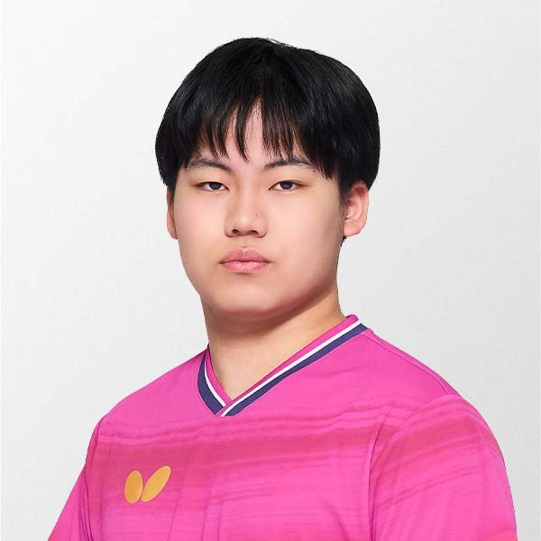

Родился 29 апреля 2007 года, самый молодой игрок в первой десятке мира. 5 октября 2026 года возглавил рейтинг ITTF, став первым японцем на вершине с 1980 года (после Сэйдзи Оно). На вершину его вознёс первый титул Grand Smash: на WTT China Smash 2026 он в семипартийном финале обыграл Линь Юньжу.
Ранее выиграл US Smash 2026, был полуфиналистом Europe Smash и WTT Champions Yokohama. Двукратный чемпион Японии (2025, 2026). Стиль — бесстрашная атакующая игра в быстром темпе. В 19 лет он символ смены поколений.
